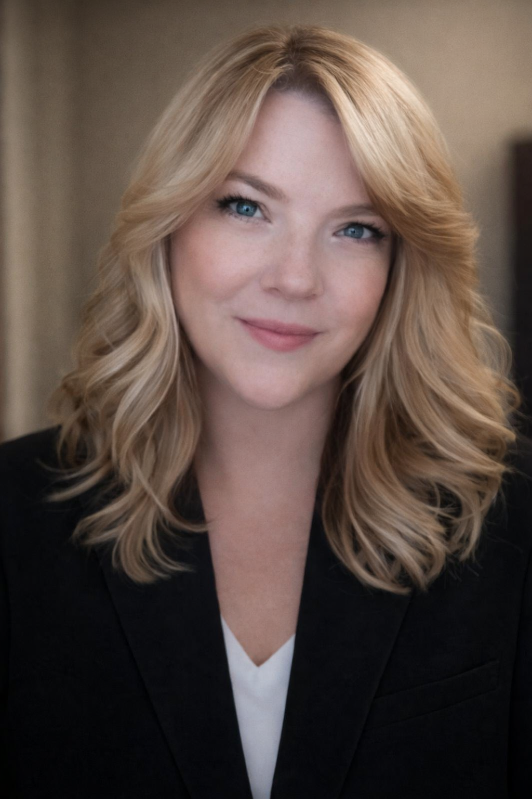
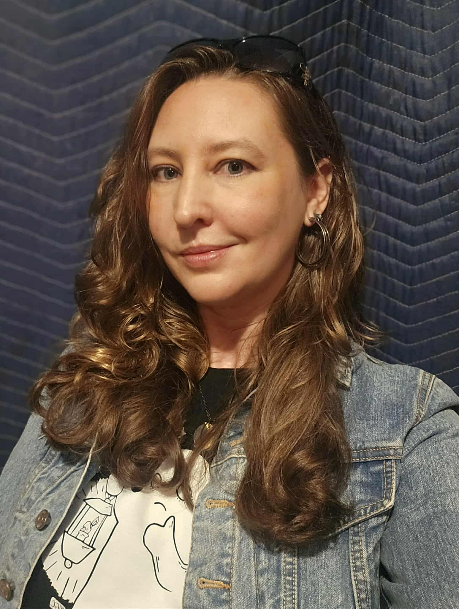
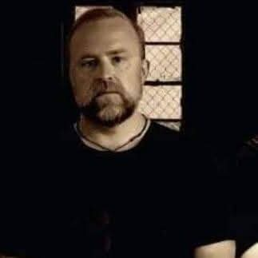

Investigation Science
Focused on the practice and methodology of paranormal investigations.
- Paranormal research methods
- Responsible investigation techniques
- Investigator development and mentorship
- Field methodology and best practices
The Paranormal Initiative - Applied Paranormal Research and Studies is being developed to advance professional standards in paranormal investigation through education, research, ethics, truth, honor, and integrity.
What began as a way to support better investigation, documentation, and evidence review has grown into a broader research and education initiative. Today, our work focuses on responsible paranormal investigation, EVP and ITC research, equipment literacy, environmental awareness, historical inquiry, field methodology, technology development, and professional reporting.
Through collaboration, education, and continual learning, we strive to provide investigators, researchers, and enthusiasts with the knowledge, tools, and resources needed to conduct thoughtful, well-documented, and responsible investigations.
The Professional Advisory Board helps guide The Paranormal Initiative across connected areas of investigation, research, education, technology, ethics, and public communication.
Focused on the practice and methodology of paranormal investigations.
Dedicated to collecting, preserving, reviewing, and interpreting evidence responsibly.
Understanding the tools investigators use and how they actually function.
Understanding natural variables that may influence investigations.
Advancing responsible instrumental communication research.
Exploring experiences related to consciousness and exceptional human phenomena.
Maintaining professionalism throughout the investigation process.
Creating consistent, transparent, and responsible reporting standards.
Building knowledge within the paranormal community.
Developing tools that support responsible investigations.
Understanding the historical context behind reported phenomena.
At The Paranormal Initiative, we believe the unknown is worthy of thoughtful exploration, responsible investigation, and lifelong learning.
Our purpose is to encourage education, research, and collaboration while providing investigators, researchers, and enthusiasts with the knowledge and tools to better understand reported paranormal phenomena.
We believe every investigation is an opportunity to learn. Whether exploring haunted locations, studying EVP and ITC, documenting environmental conditions, researching historical accounts, or developing new technologies, we strive to approach our work with curiosity, professionalism, and integrity.
We recognize that the paranormal is a diverse field with many perspectives and experiences. By sharing knowledge, improving investigative methods, and encouraging respectful discussion, we hope to contribute to a deeper understanding of the unknown.
The Paranormal Initiative exists to support responsible investigation through education, documentation, technological innovation, and open inquiry. Our goal is not simply to ask questions, but to continually improve how those questions are explored.
We are committed to creating resources that help investigators document their work, understand the tools they use, preserve their findings, and communicate their observations responsibly.
As our community grows, we hope to bring together investigators, researchers, educators, historians, technologists, and curious minds who share a passion for exploring the mysteries of our world.
Approach every investigation with preparation, patience, and professionalism.
Create clear, organized, and meaningful records that preserve observations and experiences.
Consider observations thoughtfully, communicate findings honestly, and remain open to continued learning.
The Professional Advisory Board is composed of experienced investigators, researchers, educators, historians, technical professionals, and subject matter experts who contribute diverse perspectives and practical field experience. Through collaboration, ethical leadership, and a commitment to education and research, the Board helps guide The Paranormal Initiative's efforts to advance responsible investigation, strengthen professional practices, and encourage continual learning within the paranormal community.

Todd Wayne is a seasoned paranormal investigator with over three decades of experience in research, field investigation, and case analysis. With roots tracing back to his first personal experience in 1981 and formal investigative work beginning in 1996, Todd has dedicated his life to understanding the unknown through disciplined inquiry rather than assumption.
Throughout his career, Todd has built a reputation for approaching the paranormal with a grounded, evidence-based mindset. His work emphasizes structure, critical thinking, and ethical responsibility. He founded the Pasco Paranormal Research Society in 2000 and later established the Somerset Paranormal Research Society in 2022, where he continues to lead investigations focused on environmental analysis, data correlation, and responsible case evaluation.
His leadership has also extended to national-level involvement, having served as Director of the National Paranormal Society's Aliens & UFOs Department and later as Director of the National Paranormal Society from 2012 to 2013. His interdisciplinary approach draws from environmental science, structural behavior, meteorology, psychology, electrical systems, and human perception so natural explanations can be ruled out before any claim is considered potentially unexplained.
Beyond field investigations, Todd is deeply involved in education and outreach. Through his Ghostology 101 framework, he helps investigators build a structured and responsible approach to the field. He is also the executive producer and co-host of Crossroads of the Unknown, a weekly podcast hosted alongside Roni Healan exploring haunted locations, spiritual practices, ghost stories, unexplained phenomena, and firsthand encounters with the unknown.
Todd previously served as executive producer of Paranomaly: Beyond Disclosure and is the creator of The Paranormal Initiative, a professional investigation platform designed to bring structure, accountability, and credibility to paranormal research. He began developing The Paranormal Initiative out of a growing concern with the direction of the field, recognizing the need for a disciplined system for documentation, analysis, and case evaluation.
As part of this initiative, Todd is developing The Paranormal Initiative app for the Apple ecosystem, guiding investigators through every phase of a case from intake and walkthrough to baseline, investigation, evidence review, and final classification. Designed for both individuals and teams, the platform strengthens discipline, consistency, and accountability without replacing the investigator's judgment.
At the core of Todd's work is a commitment to Truth, Honor, Integrity, and Credibility. His mission is to raise the standard of paranormal investigation through structure, education, and evidence-based practice, ensuring every case is approached with responsibility, integrity, and respect for both the unknown and those seeking answers.

Roni Healan, a native of Savannah, Georgia, is a lifelong Sensitive and Empath with more than 25 years of experience researching and investigating the paranormal.
Her journey into the unexplained began in 1979 at the age of twelve, when she first experienced vivid visions and dream communications from deceased family members. This profound early connection to the spirit world deepened after relocating with her mother from Florida back to Savannah, where she encountered full-bodied apparitions and frequent spiritual visitations.
Drawn to locations rich in history and energy, Roni spent much of her youth exploring Savannah’s famed Bonaventure Cemetery, where she found a sense of calm and familiarity rather than fear. As a Sensitive, she recognizes Savannah as a place where spiritual presence is deeply interwoven into everyday life, offering continuous insight and experience.
Over the years, Roni has been an active member of multiple paranormal investigation teams and has explored well-known locations including Ashmore Estates in Illinois, Poasttown Elementary in Ohio, the historic Waverly Hills Sanatorium in Louisville, Kentucky, Fort Pulaski on Tybee Island, and the Tybee Island Museum in Savannah, Georgia.
Her work also extends into private investigations across Savannah, Tennessee, and Pennsylvania. In addition to formal investigations, Roni has personally experienced paranormal activity in Pennsylvania, further expanding her firsthand understanding of spiritual phenomena across different regions and environments.
Now beginning an exciting new chapter alongside her beloved partner, Todd Wayne, Roni brings her knowledge, intuition, and passion as a lead investigator with Somerset Paranormal Research Society and The Paranormal Initiative. She is deeply committed to connecting with others who share similar experiences and remains steadfast in her belief that we are not alone. Through her work, she continues to seek truth, understanding, and meaningful dialogue within the paranormal community.

Michelle has been a paranormal investigator since 2020, but she has lived with the paranormal for most of her life, growing up in a haunted home that, at times, defied conventional understanding.
Over the past six years, she has walked between the worlds of paranormal enthusiast and paranormal researcher. In doing so, she strives to bridge that gap by shedding light on the increasingly gimmicky nature of paranormal entertainment, which she believes can be harmful to the field, while also making the scientific side of investigation more engaging and accessible for those entering the field.
Outside of her paranormal work, Michelle is a freelance lighting programmer and technician. This career has given her valuable insight into production and behind-the-scenes processes, helping her distinguish between what is genuine and what is created for entertainment.
Her work has taken her across New England and across the country, bringing her into both well-known and lesser-known haunted locations and allowing her to encounter a wide range of perspectives on the paranormal.
She continues to refine and expand on current techniques in hopes of removing the circumstantial out of circumstantial evidence.

Rick Hale has been interested in the paranormal since the age of 8.
Rick is the author of four books on the paranormal: The Geek's Guide To The Strange and Unusual: Poltergeists, Ghosts and Demons, Behold! Shocking True Tales of Terror and Some Other Spooky Stuff, Bullets, Booze, and Babes: The Haunted History of Chicago and Illinois, and Ghost Watch.
Rick has been featured in several online publications, including Paranormal Underground Magazine, Spooky Isles, Legends Magazine, and Supernatural Magazine.
Rick was featured in Ghost Tapes 2, as well as in four episodes of Ghost Tapes: The Series.
Rick co-hosted Paranormal Underground Radio and The Shadow Initiative. Rick currently hosts Ask A Ghost Hunter and On The Road with Rick under the brand Common Sense Paranormal Media, found on YouTube, TikTok, Instagram, and Facebook.
Although not an actor, Rick was featured in the independent found footage film Alien BTS. Rick will be acting in two future films for Spooky Ventures.